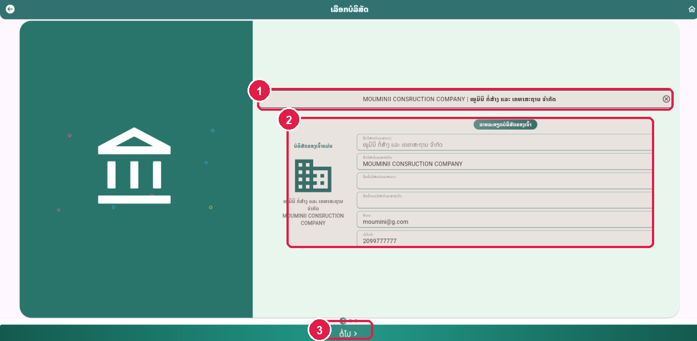
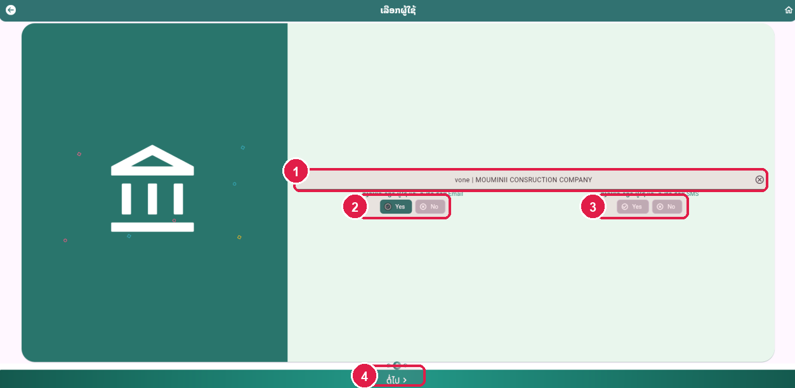
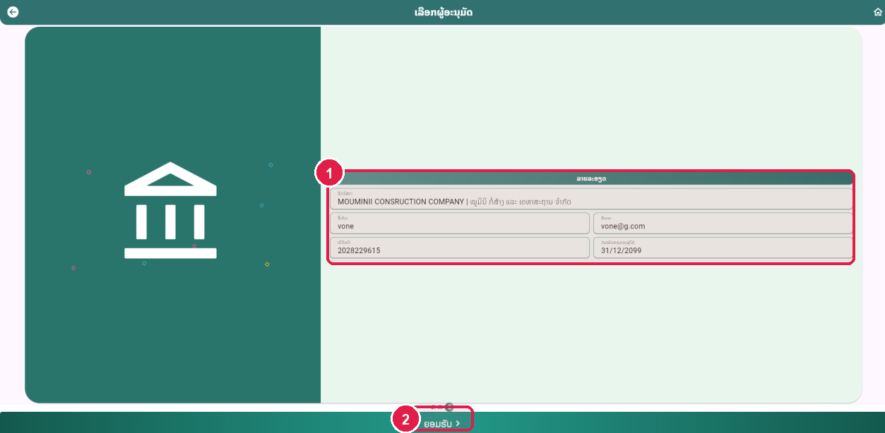
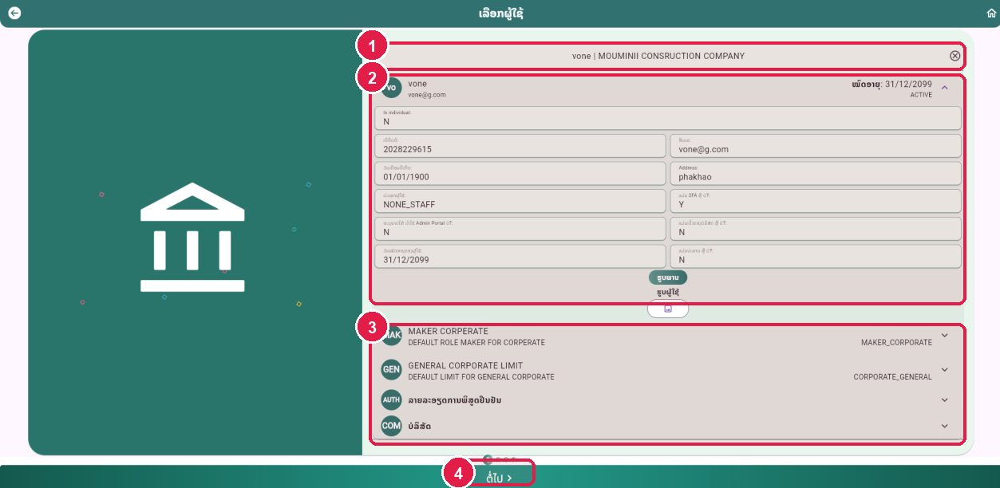
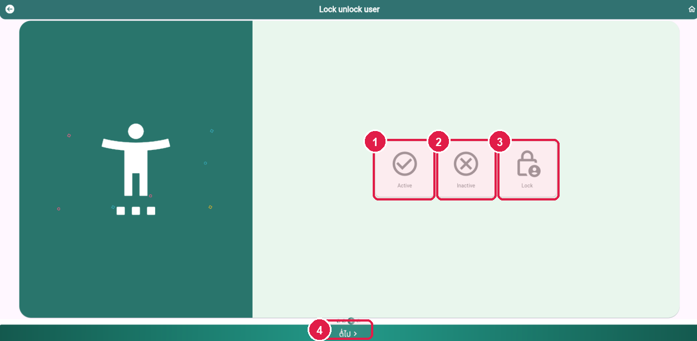
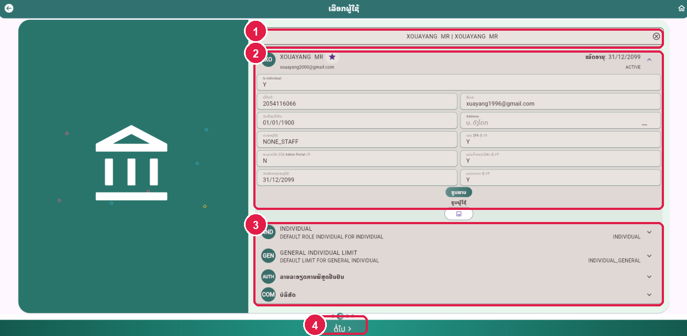
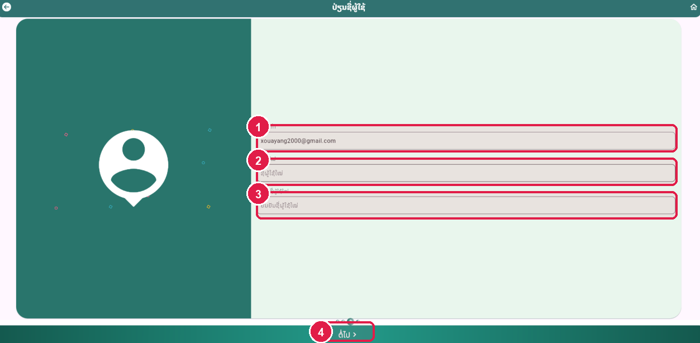
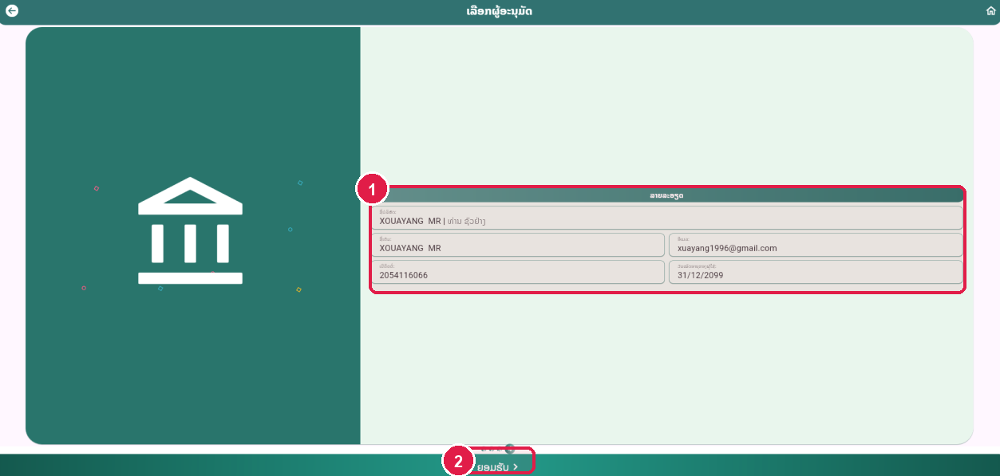

ຂັ້ນຕອນທີ 1 (4.1): ເຂົ້າເມນູ Reset Password ແລະ ເລືອກບໍລິສັດ/ບຸກຄົນ
ເລືອກ User ຜູ້ໃຊ້ທີ່ເປັນ Corporate ຫຼື Individual ທີ່ຕ້ອງການ Reset Password
ເລືອກບໍລິສັດ ຫຼື ບຸກຄົນ (Mark 1)
ຄລິກຊ່ອງ "ລາຍລະອຽດຂອງບໍລິສັດ" ເພື່ອເລືອກບໍລິສັດ (Corporate) ຫຼື ບຸກຄົນ (Individual) ທີ່ຕ້ອງການ Reset password.
ກົດປຸ່ມ "ຕໍ່ໄປ >" (Mark 2)
ກົດປຸ່ມ "ຕໍ່ໄປ >" ຢູ່ດ້ານລຸ່ມ.
ໝາຍເຫດ: ເຂົ້າເມນູ Customer management → User management → User Control → Reset password.

ຂັ້ນຕອນທີ 2: ກວດສອບຂໍ້ມູນບໍລິສັດ ແລ້ວກົດປຸ່ມຕໍ່ໄປ
ສະແດງລາຍລະອຽດຂອງບໍລິສັດທີ່ເລືອກ
ບໍລິສັດທີ່ເລືອກ (Mark 1)
ກວດສອບຊື່ບໍລິສັດໃນແຖບຄົ້ນຫາ.
ລາຍລະອຽດບໍລິສັດຂອງເຈົ້າ (Mark 2)
ກວດສອບຊື່ບໍລິສັດ, ອີເມວ ແລະ ເບີໂທ.
ກົດປຸ່ມ "ຕໍ່ໄປ >" (Mark 3)
ຫຼັງຈາກນັ້ນໃຫ້ກົດປຸ່ມ "ຕໍ່ໄປ >".
ໝາຍເຫດ: ກວດສອບຂໍ້ມູນບໍລິສັດໃຫ້ຖືກຕ້ອງກ່ອນເລືອກ User.

ຂັ້ນຕອນທີ 3 (4.2): ເລືອກ User ແລະ ຊ່ອງທາງສົ່ງລະຫັດ (Email / SMS)
ການ Reset password ຜູ້ໃຊ້ທີ່ເລືອກ
1. ໃຫ້ເລືອກ User (Mark 1)
ຄລິກເລືອກຊື່ User ທີ່ຕ້ອງການ Reset password (ຕົວຢ່າງ: vone | MOUMINII CONSRUCTION COMPANY).
2. ໃຫ້ກົດເລືອກ Yes/No ເພື່ອສົ່ງລາຍລະອຽດຜູ້ໃຊ້ ແລະ ລະຫັດດ້ວຍ Email (Mark 2)
ກົດເລືອກ Yes ຫຼື No ໃນຫົວຂໍ້ "ສົ່ງລາຍລະອຽດ ຜູ້ໃຊ້ ແລະ ລະຫັດ ດ້ວຍ Email".
3. ໃຫ້ກົດເລືອກ Yes/No ເພື່ອສົ່ງລາຍລະອຽດຜູ້ໃຊ້ ແລະ ລະຫັດດ້ວຍ SMS (Mark 3)
ກົດເລືອກ Yes ຫຼື No ໃນຫົວຂໍ້ "ສົ່ງລາຍລະອຽດ ຜູ້ໃຊ້ ແລະ ລະຫັດ ດ້ວຍ SMS".
ກົດປຸ່ມ "ຕໍ່ໄປ >" (Mark 4)
ຫຼັງຈາກນັ້ນໃຫ້ກົດປຸ່ມ "ຕໍ່ໄປ >".
ໝາຍເຫດ: ສາມາດເລືອກສົ່ງລະຫັດຜ່ານໃໝ່ທາງ Email ຫຼື SMS ຕາມຄວາມຕ້ອງການຂອງລູກຄ້າ.

ຂັ້ນຕອນທີ 4: ກວດສອບລາຍລະອຽດ ແລະ ກົດປຸ່ມຍອມຮັບ
ໜ້າຕ່າງ ເລືອກຜູ້ອະນຸມັດ
ກວດສອບລາຍລະອຽດຜູ້ໃຊ້ (Mark 1)
ກວດສອບຊື່ບໍລິສັດ, ຊື່ເຕັມ, ອີເມວ, ເບີຕິດຕໍ່ ແລະ ວັນໝົດອາຍຸຂອງຜູ້ໃຊ້.
ກົດປຸ່ມ "ຍອມຮັບ >" (Mark 2)
ໃຫ້ກົດປຸ່ມ "ຍອມຮັບ >" ແລ້ວຜູ້ໃຊ້ກໍຈະເຫັນໜ້າສຳເລັດ.
ໝາຍເຫດ: ລາຍການ Reset Password ຈະຖືກສົ່ງໄປລໍຖ້າການອະນຸມັດ.

ຂັ້ນຕອນທີ 5: Reset Password ສຳເລັດ (Request Success)
ໜ້າຈໍຢັ້ງຢືນ Request Success
ສະຖານະ Request Success (Mark 1)
ສົ່ງຄຳຮ້ອງຂໍ Reset Password ສຳເລັດ.
ສົ່ງລະຫັດຜ່ານໃໝ່ (Mark 2)
ລະຫັດຜ່ານໃໝ່ຈະຖືກສົ່ງໄປທາງ Email / SMS ຫຼັງຈາກລາຍການຖືກອະນຸມັດ.
ປຸ່ມ Share / Save / Home (Mark 3)
ກົດ Save ຫຼື Home.
ໝາຍເຫດ: ສຳເລັດຂັ້ນຕອນການຣີເຊັດລະຫັດຜ່ານ (Reset Password).
ຂັ້ນຕອນທີ 1 (5.1): ເຂົ້າເມນູ Reset Tpin ແລະ ເລືອກຜູ້ໃຊ້ Corporate/Individual
ເລືອກບໍລິສັດ ຫຼື ບຸກຄົນທີ່ຕ້ອງການ Reset Tpin
ເລືອກບໍລິສັດ ຫຼື ບຸກຄົນທີ່ຕ້ອງການ Reset Tpin (Mark 1)
ຄລິກຊ່ອງ "ລາຍລະອຽດຂອງບໍລິສັດ" ເພື່ອເລືອກ Corporate ຫຼື Individual.
ກົດປຸ່ມ "ຕໍ່ໄປ >" (Mark 2)
ກົດປຸ່ມ "ຕໍ່ໄປ >" ຢູ່ດ້ານລຸ່ມ.
ໝາຍເຫດ: ໃຊ້ສຳລັບກໍລະນີລູກຄ້າລືມລະຫັດທຸລະກຳ 6 ຫຼັກ (TPIN).
ຂັ້ນຕອນທີ 2: ກວດສອບລາຍລະອຽດບໍລິສັດ ແລ້ວກົດປຸ່ມຕໍ່ໄປ
ກວດສອບຂໍ້ມູນບໍລິສັດທີ່ເລືອກ
ຊື່ບໍລິສັດທີ່ເລືອກ (Mark 1)
ກວດສອບຊື່ບໍລິສັດ.
ລາຍລະອຽດບໍລິສັດ (Mark 2)
ກວດສອບຊື່ລາວ/ອັງກິດ, ອີເມວ ແລະ ເບີໂທ.
ກົດປຸ່ມ "ຕໍ່ໄປ >" (Mark 3)
ກົດປຸ່ມ "ຕໍ່ໄປ >".
ໝາຍເຫດ: ກົດປຸ່ມຕໍ່ໄປເພື່ອເລືອກ User ທີ່ຕ້ອງການ Reset Tpin.
ຂັ້ນຕອນທີ 3 (5.2): ເລືອກ User ແລະ ຊ່ອງທາງສົ່ງລະຫັດ Tpin (Email / SMS)
ການ Reset Tpin ຜູ້ໃຊ້ທີ່ເລືອກ
1. ໃຫ້ເລືອກ User (Mark 1)
ເລືອກ User ຜູ້ໃຊ້ທີ່ຕ້ອງການ Reset Tpin.
2. ເລືອກ Yes/No ສົ່ງລາຍລະອຽດຜູ້ໃຊ້ ແລະ ລະຫັດດ້ວຍ Email (Mark 2)
ກົດເລືອກ Yes ຫຼື No ສຳລັບການສົ່ງທາງ Email.
3. ເລືອກ Yes/No ສົ່ງລາຍລະອຽດຜູ້ໃຊ້ ແລະ ລະຫັດດ້ວຍ SMS (Mark 3)
ກົດເລືອກ Yes ຫຼື No ສຳລັບການສົ່ງທາງ SMS.
ກົດປຸ່ມ "ຕໍ່ໄປ >" (Mark 4)
ກົດປຸ່ມ "ຕໍ່ໄປ >".
ໝາຍເຫດ: ກວດສອບຊ່ອງທາງການຮັບລະຫັດ Tpin (Email / SMS) ໃຫ້ຖືກຕ້ອງ.
ຂັ້ນຕອນທີ 4: ກວດສອບລາຍລະອຽດ ແລະ ກົດປຸ່ມຍອມຮັບ
ໜ້າຕ່າງ ເລືອກຜູ້ອະນຸມັດ
ກວດສອບລາຍລະອຽດຜູ້ໃຊ້ (Mark 1)
ກວດສອບຊື່ບໍລິສັດ, ຊື່ເຕັມ, ອີເມວ, ເບີຕິດຕໍ່ ແລະ ວັນໝົດອາຍຸ.
ກົດປຸ່ມ "ຍອມຮັບ >" (Mark 2)
ກົດປຸ່ມ "ຍອມຮັບ >" ເພື່ອຢືນຢັນການ Reset Tpin.
ໝາຍເຫດ: ຫຼັງຈາກກົດຍອມຮັບ ຜູ້ໃຊ້ຈະເຫັນໜ້າສຳເລັດ.
ຂັ້ນຕອນທີ 5: Reset Tpin ສຳເລັດ (Request Success)
ໜ້າຈໍຢັ້ງຢືນ Request Success
ສະຖານະ Request Success (Mark 1)
ສົ່ງຄຳຮ້ອງຂໍ Reset Tpin ສຳເລັດ.
ສົ່ງລະຫັດ Tpin ໃໝ່ (Mark 2)
ລະຫັດ Tpin ໃໝ່ຈະຖືກສົ່ງໄປຫາລູກຄ້າຫຼັງຈາກລາຍການຖືກອະນຸມັດ.
ປຸ່ມ Share / Save / Home (Mark 3)
ກົດ Save ຫຼື Home.
ໝາຍເຫດ: ສຳເລັດຂັ້ນຕອນການ Reset Tpin.
ຂັ້ນຕອນທີ 1 (6.1): ເຂົ້າເມນູ Resend Create Password ແລະ ເລືອກຜູ້ໃຊ້
ສຳລັບກໍລະນີລູກຄ້າຕັ້ງແລ້ວແຕ່ບໍ່ເຫັນລະຫັດສົ່ງເຂົ້າ
ເລືອກບໍລິສັດ (Corporate) ຫຼື ບຸກຄົນ (Individual) (Mark 1)
ຄລິກຊ່ອງ "ລາຍລະອຽດຂອງບໍລິສັດ" ເພື່ອເລືອກຜູ້ໃຊ້ທີ່ຕ້ອງການ Resend create password.
ກົດປຸ່ມ "ຕໍ່ໄປ >" (Mark 2)
ກົດປຸ່ມ "ຕໍ່ໄປ >" ຢູ່ດ້ານລຸ່ມ.
ໝາຍເຫດ: ວິທີນີ້ແມ່ນໃຊ້ເມື່ອລູກຄ້າສ້າງບັນຊີແລ້ວ ແຕ່ບໍ່ເຫັນລະຫັດສົ່ງເຂົ້າທາງອີເມວ/SMS.
ຂັ້ນຕອນທີ 2: ກວດສອບລາຍລະອຽດບໍລິສັດ ແລ້ວກົດປຸ່ມຕໍ່ໄປ
ສະແດງຂໍ້ມູນບໍລິສັດທີ່ເລືອກ
ບໍລິສັດທີ່ເລືອກ (Mark 1)
ກວດສອບຊື່ບໍລິສັດ.
ລາຍລະອຽດບໍລິສັດ (Mark 2)
ກວດສອບອີເມວ ແລະ ເບີໂທ.
ກົດປຸ່ມ "ຕໍ່ໄປ >" (Mark 3)
ກົດປຸ່ມ "ຕໍ່ໄປ >".
ໝາຍເຫດ: ກົດຕໍ່ໄປເພື່ອເລືອກ User ທີ່ຕ້ອງການສົ່ງລະຫັດຄືນໃໝ່.
ຂັ້ນຕອນທີ 3 (6.2): ເລືອກ User ແລະ ຊ່ອງທາງສົ່ງລະຫັດ (Email / SMS)
ການ Resend Create Password ຜູ້ໃຊ້ທີ່ເລືອກ
1. ໃຫ້ເລືອກ User (Mark 1)
ເລືອກຊື່ User ທີ່ຕ້ອງການ Resend create password.
2. ໃຫ້ກົດເລືອກ Yes/No ເພື່ອສົ່ງລາຍລະອຽດຜູ້ໃຊ້ ແລະ ລະຫັດດ້ວຍ Email (Mark 2)
ເລືອກ Yes ຫຼື No ສຳລັບການສົ່ງທາງ Email.
3. ໃຫ້ກົດເລືອກ Yes/No ເພື່ອສົ່ງລາຍລະອຽດຜູ້ໃຊ້ ແລະ ລະຫັດດ້ວຍ SMS (Mark 3)
ເລືອກ Yes ຫຼື No ສຳລັບການສົ່ງທາງ SMS.
ກົດປຸ່ມ "ຕໍ່ໄປ >" (Mark 4)
ກົດປຸ່ມ "ຕໍ່ໄປ >".
ໝາຍເຫດ: ກວດສອບວ່າອີເມວ ຫຼື ເບີໂທຂອງຜູ້ໃຊ້ຖືກຕ້ອງ.
ຂັ້ນຕອນທີ 4: ກວດສອບລາຍລະອຽດ ແລະ ກົດປຸ່ມຍອມຮັບ
ໜ້າຕ່າງ ເລືອກຜູ້ອະນຸມັດ
ກວດສອບລາຍລະອຽດຜູ້ໃຊ້ (Mark 1)
ກວດສອບຊື່ບໍລິສັດ, ຊື່ຜູ້ໃຊ້, ອີເມວ ແລະ ເບີໂທ.
ກົດປຸ່ມ "ຍອມຮັບ >" (Mark 2)
ກົດປຸ່ມ "ຍອມຮັບ >".
ໝາຍເຫດ: ລາຍການຈະຖືກສົ່ງໄປລໍຖ້າການອະນຸມັດ.
ຂັ້ນຕອນທີ 5: Resend Create Password ສຳເລັດ (Request Success)
ໜ້າຈໍຢັ້ງຢືນ Request Success
ສະຖານະ Request Success (Mark 1)
ສົ່ງຄຳຮ້ອງຂໍ Resend Create Password ສຳເລັດ.
ສົ່ງລະຫັດຄືນໃໝ່ (Mark 2)
ລະບົບຈະສົ່ງລະຫັດໄປຫາລູກຄ້າອີກຄັ້ງຫຼັງຈາກອະນຸມັດ.
ປຸ່ມ Share / Save / Home (Mark 3)
ກົດ Save ຫຼື Home.
ໝາຍເຫດ: ສຳເລັດຂັ້ນຕອນ Resend Create Password.
ຂັ້ນຕອນທີ 1 (7.1): ເຂົ້າເມນູ Lock/Unlock User ແລະ ເລືອກບໍລິສັດ/ບຸກຄົນ
ເລືອກ Corporate ຫຼື Individual ທີ່ຕ້ອງການ Lock/Unlock
ເລືອກບໍລິສັດ ຫຼື ບຸກຄົນ (Mark 1)
ຄລິກຊ່ອງ "ລາຍລະອຽດຂອງບໍລິສັດ" ເພື່ອເລືອກບໍລິສັດ ຫຼື ບຸກຄົນທີ່ຕ້ອງການລ໋ອກ ຫຼື ປົດລ໋ອກ.
ກົດປຸ່ມ "ຕໍ່ໄປ >" (Mark 2)
ກົດປຸ່ມ "ຕໍ່ໄປ >" ຢູ່ດ້ານລຸ່ມ.
ໝາຍເຫດ: ໃຊ້ສຳລັບການປົດລ໋ອກ (Active), ປິດໃຊ້ງານຊົ່ວຄາວ (Inactive) ຫຼື ລ໋ອກບັນຊີ (Lock).
ຂັ້ນຕອນທີ 2: ກວດສອບລາຍລະອຽດບໍລິສັດ ແລ້ວກົດປຸ່ມຕໍ່ໄປ
ສະແດງຂໍ້ມູນບໍລິສັດທີ່ເລືອກ
ບໍລິສັດທີ່ເລືອກ (Mark 1)
ກວດສອບຊື່ບໍລິສັດ.
ລາຍລະອຽດບໍລິສັດ (Mark 2)
ກວດສອບອີເມວ ແລະ ເບີໂທ.
ກົດປຸ່ມ "ຕໍ່ໄປ >" (Mark 3)
ກົດປຸ່ມ "ຕໍ່ໄປ >".
ໝາຍເຫດ: ກົດຕໍ່ໄປເພື່ອເລືອກ User ທີ່ຕ້ອງການ Lock/Unlock.

ຂັ້ນຕອນທີ 3 (7.2): ເລືອກ User ຜູ້ໃຊ້ທີ່ຕ້ອງການ Lock/Unlock
ກວດສອບຂໍ້ມູນ ແລະ ສະຖານະປັດຈຸບັນຂອງ User
ເລືອກ User ທີ່ຕ້ອງການ Lock/Unlock (Mark 1)
ຄລິກເລືອກຊື່ User ຈາກຊ່ອງຄົ້ນຫາ.
ກວດສອບຂໍ້ມູນຜູ້ໃຊ້ ແລະ ສະຖານະປັດຈຸບັນ (Mark 2)
ເບິ່ງລາຍລະອຽດເບີໂທ, ອີເມວ ແລະ ສະຖານະປັດຈຸບັນຂອງຜູ້ໃຊ້.
ກວດສອບສິດ Role & Limit (Mark 3)
ກວດສອບສິດຂອງຜູ້ໃຊ້.
ກົດປຸ່ມ "ຕໍ່ໄປ >" (Mark 4)
ກົດປຸ່ມ "ຕໍ່ໄປ >" ເພື່ອເລືອກສະຖານະ Active / Inactive / Lock.
ໝາຍເຫດ: ຫຼັງຈາກເລືອກ User ແລ້ວກົດປຸ່ມຕໍ່ໄປ.

ຂັ້ນຕອນທີ 4: ເລືອກສະຖານະ Active (ປົດລ໋ອກ), Inactive ຫຼື Lock
ເລືອກ 1 ໃນ 3 ລາຍການຕາມຄວາມຕ້ອງການ
Active (ປົດລ໋ອກ / ເປີດໃຊ້ງານ) (Mark 1)
ເລືອກ Active (✓) ເພື່ອປົດລ໋ອກໃຫ້ບັນຊີຜູ້ໃຊ້ກັບມາໃຊ້ງານໄດ້ປົກກະຕິ (ດັ່ງຕົວຢ່າງໃນ PDF).
Inactive (ປິດໃຊ້ງານ) (Mark 2)
ເລືອກ Inactive (✕) ເພື່ອລະງັບການໃຊ້ງານຊົ່ວຄາວ.
Lock (ລ໋ອກຜູ້ໃຊ້) (Mark 3)
ເລືອກ Lock (🔒) ເພື່ອລ໋ອກບັນຊີຜູ້ໃຊ້.
ກົດປຸ່ມ "ຕໍ່ໄປ >" (Mark 4)
ຫຼັງຈາກເລືອກສະຖານະແລ້ວ ໃຫ້ກົດປຸ່ມ "ຕໍ່ໄປ >".
ໝາຍເຫດ: ຕົວຢ່າງໃນ PDF ແມ່ນການເລືອກ Active ເພື່ອປົດລ໋ອກໃຫ້ຜູ້ໃຊ້.
ຂັ້ນຕອນທີ 5: ກວດສອບລາຍລະອຽດ ແລະ ກົດປຸ່ມຍອມຮັບ
ໜ້າຕ່າງ ເລືອກຜູ້ອະນຸມັດ
ກວດສອບລາຍລະອຽດຜູ້ໃຊ້ (Mark 1)
ກວດສອບຊື່ບໍລິສັດ, ຊື່ເຕັມ, ອີເມວ ແລະ ເບີໂທ.
ກົດປຸ່ມ "ຍອມຮັບ >" (Mark 2)
ກົດປຸ່ມ "ຍອມຮັບ >" ແລ້ວຜູ້ໃຊ້ກໍຈະເຫັນໜ້າສຳເລັດ.
ໝາຍເຫດ: ລາຍການ Lock/Unlock ຈະຖືກສົ່ງໄປລໍຖ້າການອະນຸມັດ.
ຂັ້ນຕອນທີ 6: Lock/Unlock User ສຳເລັດ (Request Success)
ໜ້າຈໍຢັ້ງຢືນ Request Success
ສະຖານະ Request Success (Mark 1)
ສົ່ງຄຳຮ້ອງຂໍ Lock/Unlock User ສຳເລັດ.
ຜົນການປ່ຽນສະຖານະ (Mark 2)
ສະຖານະຜູ້ໃຊ້ຈະປ່ຽນທັນທີຫຼັງຈາກລາຍການຖືກອະນຸມັດ.
ປຸ່ມ Share / Save / Home (Mark 3)
ກົດ Save ຫຼື Home.
ໝາຍເຫດ: ສຳເລັດຂັ້ນຕອນການລ໋ອກ ແລະ ປົດລ໋ອກ User.
ຂັ້ນຕອນທີ 1 (9.1): ເຂົ້າເມນູ Change Username ແລະ ເລືອກຊື່ຜູ້ໃຊ້
ເລືອກຜູ້ໃຊ້ທີ່ຕ້ອງການປ່ຽນແປງ Username
ເລືອກຊື່ຜູ້ໃຊ້ທີ່ຕ້ອງການປ່ຽນ (Mark 1)
ຄລິກຊ່ອງຄົ້ນຫາເພື່ອເລືອກຜູ້ໃຊ້ທີ່ຕ້ອງການປ່ຽນແປງ Username.
ກົດປຸ່ມ "ຕໍ່ໄປ >" (Mark 2)
ຫຼັງຈາກເລືອກຊື່ຜູ້ຕ້ອງການປ່ຽນແລ້ວ ໃຫ້ກົດປຸ່ມ "ຕໍ່ໄປ >".
ໝາຍເຫດ: ເຂົ້າເມນູ Customer management → User management → User Control → Change Username.

ຂັ້ນຕອນທີ 2: ກວດສອບລາຍລະອຽດຜູ້ໃຊ້ທີ່ເລືອກ
ສະແດງຂໍ້ມູນປັດຈຸບັນຂອງຜູ້ໃຊ້
ຊື່ຜູ້ໃຊ້ທີ່ເລືອກ (Mark 1)
ກວດສອບຊື່ຜູ້ໃຊ້ (ຕົວຢ່າງ: XOUAYANG MR) ແລະ ຊື່ບັນຊີເກົ່າ (xouayang2000@gmail.com).
ຂໍ້ມູນສ່ວນຕົວຂອງຜູ້ໃຊ້ (Mark 2)
ກວດສອບເບີຕິດຕໍ່, ອີເມວ, ວັນເກີດ ແລະ ສະຖານະ.
ສິດ Role & Limit (Mark 3)
ກວດສອບສິດ INDIVIDUAL ແລະ GENERAL INDIVIDUAL LIMIT.
ກົດປຸ່ມ "ຕໍ່ໄປ >" (Mark 4)
ກົດປຸ່ມ "ຕໍ່ໄປ >" ເພື່ອໄປສູ່ໜ້າປ້ອນຊື່ຜູ້ໃຊ້ໃໝ່.
ໝາຍເຫດ: ກວດສອບຂໍ້ມູນຜູ້ໃຊ້ໃຫ້ຖືກຕ້ອງກ່ອນປ່ຽນຊື່ຜູ້ໃຊ້.

ຂັ້ນຕອນທີ 3: ປ້ອນຊື່ຜູ້ໃຊ້ໃໝ່ ແລະ ຢືນຢັນຊື່ຜູ້ໃຊ້ໃໝ່
ໜ້າຕ່າງ ປ່ຽນຊື່ຜູ້ໃຊ້
ຊື່ຜູ້ໃຊ້ເກົ່າ (Mark 1)
ລະບົບສະແດງຊື່ຜູ້ໃຊ້ເກົ່າ (ເຊັ່ນ: xouayang2000@gmail.com).
1. ປ້ອນຊື່ຜູ້ໃຊ້ໃໝ່ (ຊື່ຜູ້ໃຊ້ໃໝ່) (Mark 2)
ປ້ອນຊື່ຜູ້ໃຊ້ໃໝ່ທີ່ຕ້ອງການປ່ຽນລົງໃນຊ່ອງ "ຊື່ຜູ້ໃຊ້ໃໝ່".
2. ຢືນຢັນຊື່ຜູ້ໃຊ້ໃໝ່ (ຢືນຢັນຊື່ຜູ້ໃຊ້ໃໝ່) (Mark 3)
ປ້ອນຊື່ຜູ້ໃຊ້ໃໝ່ອີກຄັ້ງໃຫ້ກົງກັນໃນຊ່ອງ "ຢືນຢັນຊື່ຜູ້ໃຊ້ໃໝ່".
ກົດປຸ່ມ "ຕໍ່ໄປ >" (Mark 4)
ຫຼັງຈາກປ້ອນສຳເລັດແລ້ວ ໃຫ້ກົດປຸ່ມ "ຕໍ່ໄປ >".
ໝາຍເຫດ: ຊື່ຜູ້ໃຊ້ໃໝ່ທັງ 2 ຊ່ອງຕ້ອງກົງກັນທຸກຕົວອັກສອນ.

ຂັ້ນຕອນທີ 4: ກວດສອບລາຍລະອຽດ ແລະ ກົດປຸ່ມຍອມຮັບ
ໜ້າຕ່າງ ເລືອກຜູ້ອະນຸມັດ
ກວດສອບລາຍລະອຽດກ່ອນຢືນຢັນ (Mark 1)
ກວດສອບຊື່ບໍລິສັດ/ຜູ້ໃຊ້, ອີເມວ, ເບີໂທ ແລະ ວັນໝົດອາຍຸ.
ກົດປຸ່ມ "ຍອມຮັບ >" (Mark 2)
ໃຫ້ກົດປຸ່ມ "ຍອມຮັບ >" ແລ້ວຜູ້ໃຊ້ກໍຈະເຫັນໜ້າສຳເລັດ.
ໝາຍເຫດ: ລາຍການປ່ຽນຊື່ຜູ້ໃຊ້ຈະຖືກສົ່ງໄປລໍຖ້າການອະນຸມັດ.
ຂັ້ນຕອນທີ 5: ປ່ຽນຊື່ຜູ້ໃຊ້ສຳເລັດ (Request Success)
ໜ້າຈໍຢັ້ງຢືນ Request Success
ສະຖານະ Request Success (Mark 1)
ສົ່ງຄຳຮ້ອງຂໍປ່ຽນຊື່ຜູ້ໃຊ້ສຳເລັດ.
ແຈ້ງເຕືອນຜູ້ໃຊ້ (Mark 2)
ຫຼັງຈາກອະນຸມັດແລ້ວ ລູກຄ້າສາມາດເຂົ້າລະບົບດ້ວຍຊື່ຜູ້ໃຊ້ໃໝ່ໄດ້ທັນທີ.
ປຸ່ມ Share / Save / Home (Mark 3)
ກົດ Save ຫຼື Home.
ໝາຍເຫດ: ສຳເລັດຂັ້ນຕອນການປ່ຽນ User ຜູ້ໃຊ້ (Change Username).